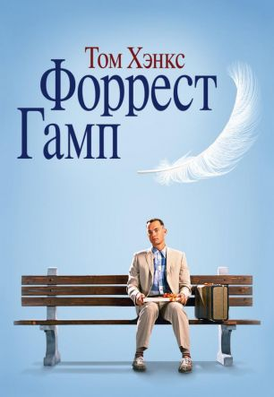
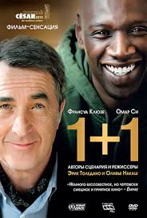

Форрест Гамп
Фильм «Форрест Гамп» повествует о жизни человека по имени Форрест Гамп (Том Хэнкс). С самого детства его преследуют сложные испытания, но ни одно не может поколебать его веру в добро и близких. Он носил протезы на ногах, его IQ был ниже среднего, сверстники всегда считали его дурачком, и посмеивались над ним. Гамп снова и снова доказывал им, что мечты могут стать реальностью. Кроме того, сняв протезы в юности, он узнал, что прекрасно бегает. «Беги, Форрест, беги!» - эта фраза не раз поможет ему в жизни, ему придется побегать не только от обидчиков в колледже, но и от разрывных снарядов на фронте Вьетнама.
Форрест станет свидетелем и косвенным участником важнейших культурных и исторических событий в США, встретит множество знаменитых людей и даже будет награжден медалью за отвагу. Но несмотря ни на что, в своем сердце он навсегда пронесет любовь к одной девушке Дженни Курран (Робин Райт), с которой они вместе росли. Хотя со временем их судьбы разделяться, он не перестанет искать ее, чтобы быть рядом. Фильм «Форрест Гамп» - это история самого Форреста, рассказанная им случайным прохожим на автобусной остановке, где-то в пригороде.
Ройко Оксана Александровна
.jpeg)
Почему я выбрала фронтенд
- Хочу попробовать себя в совершенно новом направлении;
- Всегда мечтала познокомиться с миром IT;
- Возможность работать удаленно, при этом хорошо зарабатывать.
Ссылка на мой любимый сайт
Itea.uaНемного обо мне
Люблю путешествовать и открывать для себя новые страны и горизонты. В свободное время занимаюсь фотографией
Что ожидаю от курса
Уверена, что получу бесценный опыт. Открою в себе новые ресурсы и возможности. А так же встречу хороших друзей по интересам
Мои любимые фильмы


Исчезнувшая
Все было готово для празднования пятилетнего юбилея супружеской жизни, когда вдруг необъяснимо пропал один из виновников торжества. Остались следы борьбы в доме, кровь, которую явно пытались стереть, — и цепочка «ключей» в игре под названием «охота за сокровищами»; красивая, умная и невероятно изобретательная жена ежегодно устраивала ее для своего обожаемого мужа. И похоже, что эти «ключи» — размещенные ею тут и там странные записки и не менее странные безделушки — дают единственный шанс пролить свет на судьбу исчезнувшей. Вот только не придется ли «охотнику» в процессе поиска раскрыть миру и пару-тройку собственных малосимпатичных тайн?
Все было готово для празднования пятилетнего юбилея супружеской жизни, когда вдруг необъяснимо пропал один из виновников торжества. Остались следы борьбы в доме, кровь, которую явно пытались стереть, — и цепочка «ключей» в игре под названием «охота за сокровищами»; красивая, умная и невероятно изобретательная жена ежегодно устраивала ее для своего обожаемого мужа. И похоже, что эти «ключи» — размещенные ею тут и там странные записки и не менее странные безделушки — дают единственный шанс пролить свет на судьбу исчезнувшей. Вот только не придется ли «охотнику» в процессе поиска раскрыть миру и пару-тройку собственных малосимпатичных тайн?

1+1
Пострадав в результате несчастного случая, богатый аристократ Филипп нанимает в помощники человека, который менее всего подходит для этой работы, — молодого жителя предместья Дрисса, только что освободившегося из тюрьмы. Несмотря на то, что Филипп прикован к инвалидному креслу, Дриссу удается привнести в размеренную жизнь аристократа дух приключений
Пострадав в результате несчастного случая, богатый аристократ Филипп нанимает в помощники человека, который менее всего подходит для этой работы, — молодого жителя предместья Дрисса, только что освободившегося из тюрьмы. Несмотря на то, что Филипп прикован к инвалидному креслу, Дриссу удается привнести в размеренную жизнь аристократа дух приключений
Звездные войны
«Звёздные во́йны» — киноэпопея в жанре космическая опера, включающая в себя 11 художественных фильмов (9 эпизодов основной саги, 2 фильма «историй»), а также анимационные сериалы, мультфильмы, телефильмы, книги, комиксы, видеоигры, игрушки и прочие произведения, созданные в рамках единой фантастической вселенной «Звёздных войн», задуманной и реализованной американским режиссёром Джорджем Лукасом в конце 1970-х годов и позднее расширенной.
«Звёздные во́йны» — киноэпопея в жанре космическая опера, включающая в себя 11 художественных фильмов (9 эпизодов основной саги, 2 фильма «историй»), а также анимационные сериалы, мультфильмы, телефильмы, книги, комиксы, видеоигры, игрушки и прочие произведения, созданные в рамках единой фантастической вселенной «Звёздных войн», задуманной и реализованной американским режиссёром Джорджем Лукасом в конце 1970-х годов и позднее расширенной.